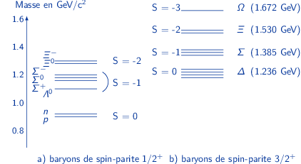
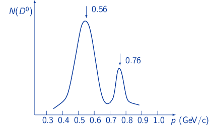

TD4 : Modèle des quarks – Les hadrons
1 Les mésons constitués des quarks \(u,d,s\) et de leurs antiquarks
- D'après le tableau caractéristique des quarks, établir le même tableau pour les antiquarks.
Opérateur conjugaison particule – antiparticule \(\hat{C}\) : \(q\overset{\hat{C}}{\rightarrow}\bar{q}\)
- \(\vv{T},\vv{I},mc^2\overset{\hat{C}}{\rightarrow}\vv{T},\vv{I},mc^2\)
- \(Q/e,B,T_3,S,c,b,t\overset{\hat{C}}{\rightarrow}-Q/e,-B,-T_3,-S,-c,-b,-t\)
- Parite π : fermions \(\pi\overset{\hat{C}}{\rightarrow}-\pi\), bosons \(\pi\overset{\hat{C}}{\rightarrow}\pi\)
\(I\) \(Q/e\) B T \(T_{3}\) \(S\) \(c\) \(b\) \(t\) \(\pi\) \(\bar{u}\) 1/2 -2/3 -1/3 1/2 -1/2 0 0 0 0 -1 \(\bar{d}\) 1/2 1/3 -1/3 1/2 1/2 0 0 0 0 -1 \(\bar{c}\) 1/2 -2/3 -1/3 0 0 0 -1 0 0 -1 \(\bar{s}\) 1/2 1/3 -1/3 0 0 +1 0 0 0 -1 \(\bar{t}\) 1/2 -2/3 -1/3 0 0 0 0 0 -1 -1 \(\bar{b}\) 1/2 1/3 -1/3 0 0 0 0 +1 0 -1
- Dans le cas où le moment orbital relatif associé au mouvement des quarks est nul, quelle est la parité d'un méson ? Quelles sont alors les valeurs possibles du moment cinétique \(\vv{I}\) et de l'isospin \(\vv{T}\) ?
\(\vv{L_i} = \vv{0}\): méson ≡ 1 quark + 1 antiquark
\begin{align*} \pi(q\bar{q}) = (+1)\cdot(-1)\cdot(-1)^{L_i} = -1 \end{align*} \begin{align*} \vv{I}(q\bar{q}) = \vv{I}_q + \vv{I}_{\bar{q}} + \vv{L}_i &= \vv{S}_q + \vv{S}_{\bar{q}} + \vv{L}_i \\ &= \vv{1}/2 + \vv{1}/2 + \vv{0}\\ &=\vv{0}\text{ ou }\vv{1} \end{align*}Pour un méson avec \(\vv{L}_i = \vv{L}(q\bar{q}) = \vv{0}\) → \(I^\pi = 0^-\) ou \(1^-\)
L'isospin \(\vv{T}(q\bar{q}) = \vv{T}(q) + \vv{T}(\bar{q})\)
- mésons \(u\bar{d}\) ou \(\bar{u}d\) → \(\vv{T} = \vv{0}\) ou \(\vv{1}\) or \(T_3 = \pm1\) donc \(\vv{T} = \vv{1}\)
- mésons contenant \(u,d,\bar{u},\bar{d}\) \(\vv{T} = \vv{1}/2\)
- mésons ne contenant ni \(u,d,\bar{u},\bar{d}\) \(\vv{T} = \vv{0}\)
- Avec les quarks \(u, d, s\), et leurs antiquarks, combien de mésons peut-on constituer dans un état de moment cinétique donné ? Représenter ces mésons sur un diagramme où la troisième composante de l'isospin \(T_3\) est portée en abscisse, et l'étrangeté \(S\) en ordonnée. Indiquer sur le diagramme la composition en quarks et en antiquarks de chacun de ces mésons.
- On considère le diagramme des mésons de moment orbital relatif nul et de moment cinétique \(\vv{I} = \vv{0}\). Regrouper ces mésons en multiplets d'isospin, et indiquer sur le diagramme où se trouvent les pions, ainsi que les mésons étranges \(K^+\), \(K^-\), \(K^0\) et \(\bar{K^0}\).
\((u,d,s)\times(\bar{u},\bar{d},\bar{s}) = 3\times3 = 9\) mésons. L'étrangeté \(S=-1,0,1\), la 3ème composante de l'isospin \(T_3\) ∈ [-1,-1/2,0,1/2,+1]
\(S\) \(T_3\) \(Q/e\) \(u\bar{u}\) 0 0 0 \(u\bar{d}\) 0 1 +1 \(u\bar{s}\) +1 1/2 +1 \(d\bar{u}\) 0 -1 -1 \(d\bar{d}\) 0 0 0 \(d\bar{s}\) +1 -1/2 0 \(s\bar{u}\) -1 -1/2 -1 \(s\bar{d}\) -1 1/2 0 \(s\bar{s}\) 0 0 0 Table 1: Combinaison de quark \(u,d,s\) pour former des mésons de moment cinétique \(I^\pi=0^-\) 
- 1 triplet d'isospin \(\pi^+(u\bar{d}),\pi^-(\bar{u}d),\pi^0\left(\frac{1}{\sqrt{2}}(u\bar{u}-d\bar{d})\right)\)
- 2 doublets d'isospin \(K^+(u\bar{s})\), \(K^0(d\bar{s})\) et \(K^-(\bar{u}s)\), \(\bar{K}^0(\bar{d}s)\)
- 2 singulets d'isospin \(\eta\left(\frac{1}{\sqrt{6}}(u\bar{u}+d\bar{d}-2s\bar{s})\right)\) et \(\eta\prime\left(\frac{1}{\sqrt{3}}(u\bar{u}+d\bar{d}+s\bar{s})\right)\)
2 Supermultiplets de baryons
La figure suivante présente le diagramme \(S\) en fonction de \(T_3\) pour le décuplet de baryons \(I^{\pi} = 3/2^+\).
La masse des baryons d'une même famille est donnée par la formule de Gell-Mann et Okubo :
\begin{align} M(Y,T)c^2 = M_0c^2 + a\,Y + b\,\left[T(T+1) - \frac{Y^2}{4}\right] \end{align}où \(M_0c^2\), \(a\) et \(b\) sont des constantes (en MeV); \(T\) est le nombre quantique d'isospin du baryon considéré, \(Y\) est son hypercharge définie ici par \(Y = B+S\), avec \(B\) le nombre baryonique et \(S\) celui d'étrangeté, les autres saveurs étant nulles.
Lorsque la formule (1) a été établie, les baryons \(\Delta\), \(\Sigma\) et \(\Xi\) étaient connus parmi les baryons \(I^\pi\) = 3/2\(^+\), mais pas le \(\Omega\). Quelle masse pouvait-on alors prédire pour cette particule \(\Omega\) ? On utilisera pour cela la figure ci-dessous présentant deux familles de baryons composés des quarks \(u,d,s\) (leur masse est portée en ordonnée).

- Justifier les nombres quantiques du \(\Omega\) et discuter les symétries de sa fonction d'onde, sachant que le moment orbital relatif des 3 quarks est \(\vv{L} = \vv{0}\).
Pour \(I^\pi=3/2^+\), nous avons ainsi
\(S=0\) et \(\vv{T}=\vv{3}/2\) : quadruplet Δ-, Δ0, Δ+ et Δ++
\begin{align*} m_\Delta c^2 &= M_0c^2 + a + b\,\left[\frac{3}{2}\times\frac{5}{2} - \frac{1}{4}\right]\\ &= M_0c^2 + a + b\times\frac{7}{2} = \unit[1236]{MeV} \end{align*}\(S=-1\) et \(\vv{T}=\vv{1}\) : triplet Σ-*, Σ0* et Σ+* (niveaux excités du baryon Σ)
\begin{align*} m_\Sigma c^2 &= M_0c^2 + b\,\left[1\times2 - \frac{0}{4}\right]\\ &= M_0c^2 + 2b = \unit[1385]{MeV} \end{align*}\(S=-2\) et \(\vv{T}=\vv{1}/2\) : doublet Ξ-* et Ξ0* (niveaux excités du baryon Ξ)
\begin{align*} m_\Xi c^2 &= M_0c^2 - a + b\,\left[\frac{1}{2}\times\frac{3}{2} - \frac{1}{4}\right]\\ &= M_0c^2 - a + \frac{b}{2} = \unit[1530]{MeV} \end{align*}\(S=-3\) et \(\vv{T}=\vv{0}\) : singulet Ω-
\begin{align*} m_\Omega c^2 &= M_0c^2 - 2a - b \end{align*}
d'où
\begin{align*} m_\Sigma c^2 - m_\Delta c^2 &= - a + 2b - \frac{7}{2}\,b = 1385 - 1236 = \unit[149]{MeV}\\ &= - a - \frac{3}{2}\,b = \unit[149]{MeV}\\ m_\Xi c^2 - m_\Sigma c^2 &= - a + \frac{b}{2} - 2b = 1530 - 1385 = \unit[145]{MeV}\\ &= - a - \frac{3}{2}\,b = \unit[145]{MeV}\\ m_\Omega c^2 - m_\Xi c^2 &= - 2a - b + a - \frac{b}{2} = \langle145; 149\rangle\unit[]{MeV}\\ &= - a - \frac{3}{2}\,b = \langle\unit[147]{MeV}\rangle \end{align*} \begin{align*} m_\Omega c^2 = m_\Xi c^2 + \unit[147]{MeV} = \unit[1677]{MeV} \end{align*}soit un écart de 0.3% par rapport à la valeur mesurée expérimentalement.
Par ailleurs, le baryon Ω- est composé de 3 quarks \(s\). L'isospin \(\vv{T} = \vv{0}\) et \(T_3=0\), l'étrangeté est \(S=-3\), le nombre baryonique \(B\) est égal à 1 tandis que le moment cinétique total \(I=\frac{3}{2}\). Étant donné que \(\vv{L}=\vv{0}\) on a
\begin{align*} \vv{I} = \vv{L} + \vv{S} = \vv{S}(s_1) + \vv{S}(s_2) + \vv{S}(s_3) \end{align*}soit
\begin{align*} \vv{I}=\frac{\vv{3}}{2} = \frac{\vv{1}}{2} + \frac{\vv{1}}{2} + \frac{\vv{1}}{2} \end{align*}Les 3 quarks \(s\) sont donc tous dans le même état de spin +1/2 ce qui par définition est impossible en raison du principe d'exclusion de Pauli → introduction de la couleur \(RVB\) comme nouveau nombre quantique et justifiant l'existence des baryons Ω-, Δ- et Δ++. Chaque quarks \(s\) existe en 3 couleurs \(R,V,B\) d'où \(\Omega^{-} = (s_R,s_V,s_B)\).
La fonction d'onde globale est antisymétrique dès lors que le nombre quantique de couleur est introduit1.
1le principe d'exclusion de Pauli généralisé implique que \(L+S+T\) soit impaire pour que la fonction d'onde soit antisymétrique. \(\vv{L}=\vv{0}\), \(\vv{T}=\vv{0}\) et \(\vv{S}=\vv{3}/2\), la somme n'est donc pas impaire. C'est l'introduction de la couleur qui permet de rendre cette fonction d'onde globale antisymétrique.
- Le proton ayant pour nombres quantiques \(Q/e=1\), $T3$=1/2 et \(s=c=b=t=0\), donner sa composition en quarks. Calculer la masse du proton à partir des masses des quarks qui le constituent. Qu'en concluez-vous ?
- proton ≡ \(uud\) soit une masse \(m_p c^2 = 2\,m_u c^2 + m_d c^2 \leq 2\times\unit[3]{MeV} + \unit[7]{MeV} = \unit[13]{MeV} \ll \unit[938]{MeV}\). 99% de la masse du proton est due à la mer de partons ≡ quarks et gluons et seulement 1% de la masse est portée par les quarks de valence \(uud\).
- Le \(\Delta^0\) et le \(\Lambda^0\) se désintègrent tous deux en un proton et un méson \(\pi^-\). Décrire ces deux réactions en termes de quarks. En déduire pourquoi la vie moyenne du \(\Delta^0\) est environ 10-23 s alors que celle du \(\Lambda^0\) vaut 2.6 10-10 s.
\(\Delta^0\rightarrow p + \pi^-\) et \(\Lambda^0\rightarrow p + \pi^-\)


Diagramme connecté Diagramme déconnecté Intéraction forte Interaction faible (saveur non conservée) \(\rightarrow\tau\sim\) 10-23 à 10-20 s \(\rightarrow\tau\gtrsim\) 10-13 s
3 Les mésons \(D\)
Soit le méson \(D^0\), ayant pour caractéeristiques : \(mc^2\) = 1865 MeV, \(I^{\pi} = 0^-\), \(\vv{T} = \vv{1/2}\), \(T_3 = -1/2\), \(Q/e = 0\), et saveur "charmée" \(c = 1\).
- Quelle est la valeur de son hypercharge et quelles sont les caractéristiques de son antiparticule \(\bar{D}^0\) ?
L'hypercharge \(Y\) est égale à la somme du nombre baryonique \(B\) et de la saveur \(S\). Le méson \(D^0\) a, par définition, un nombre baryonique nul, sa saveur étant uniquement \(c=1\) d'où \(Y=1\). En utilisant, la formule de Gell-Mann & Nishijima \(Q/E = T_3 + Y/2 = -1/2 + 1/2 = 0\), on obtient donc bien une charge nulle.
L'antiparticule \(\bar{D}^0\) possède les mêmes propriétés que \(D^0\) exception faite de la 3ème composante de l'isospin \(T_3\) égale à +1/2 et à la saveur \(c=-1\). Les mésons étant des bosons, la parité reste la même soit \(I^\pi=0^-\).
- Combien d'éléments comprend le multiplet d'isospin dont fait partie \(D^0\) ? Quelles sont les caractéristiques de ces éléments autres que \(D^0\) ?
Multiplet d'isospin de \(D^0\)
\(\vv{T} = \vv{1}/2\), on a donc un doublet d'isospin \(T_3=-1/2,+1/2\) de même saveur. En plus du méson \(D^0\), le second membre du doublet a \(T_3=+1/2\) soit une charge \(Q/e=+1/2+1/2=+1\). Il s'agit du méson \(D^+\). On en déduit que l'antiparticule du \(D^+\) est donc le méson \(D^-\) ayant les mêmes propriétés que le \(D^+\) à la charge (et donc \(T_3\)) près.
- Donner la composition en quarks de \(D^0\) et \(\bar{D}^0\), et des éléments trouvés question 2, ainsi que de leurs antiparticules.
Le méson \(D^0\) est forcément constitué d'un quark charme et d'un antiquark sans saveur i.e. \(\bar{u}\) ou \(\bar{d}\). Le fait qu'il est une charge nulle implique nécessairement la présence d'un antiquark \(u\). Le doublon d'isospin de \(D^0\) qu'est le méson \(D^+\) est donc constitué d'un quark \(c\) (même saveur) et d'un antiquark \(d\) (d'où sa charge électrique \(+e\)). De même, les antiparticules \(\bar{D}^0\) et \(D^-\) sont constituées d'un antiquark \(c\) et respectivement d'un quark \(u\) et \(d\).
\(D^0\) \(c\bar{u}\) \(D^+\) \(c\bar{d}\) \(\bar{D}^0\) \(\bar{c}u\) \(D^-\) \(\bar{c}d\)
- Soit \(\vv{L}\) le moment orbital relatif du système de quarks composant le \(D^0\) et \(\vv{I}\) son moment cinétique total. Préciser les valeurs de \(\vv{L}\) et de \(\vv{S}\).
\(\vv{I} = \vv{L} + \vv{S}\) soit \(\vv{L} = \vv{I} + \vv{S} = \vv{0} + \vv{S}_{c} + \vv{S}_{\bar{u}} = \vv{0} + \vv{1}/2 + \vv{1}/2 = \vv{0}\) ou \(\vv{1}\). En tenant compte de la parité π, on obtient
\begin{align*} \pi(D^0) &= \pi(c)\cdot\pi(\bar{u})\cdot(-1)^L\\ -1 &= +1\cdot-1\cdot(-1)^L \end{align*}d'où \(L\) pair. Les valeurs de \(\vv{L}\) et de \(\vv{S}\) satisfaisant aux conservations du moment cinétique total et de la parité sont donc \(\vv{L}=\vv{0}\) et \(\vv{S}=\vv{0}\).
- On observe la désintégration \(D^0 \rightarrow K^- + \pi^+\). En utilisant seulement le moment cinétique total et la parité, dire quelle est l'interaction responsable de cette désintégration. Trouver d'autres arguments àa l'appui de cette réponse. On donne pour les kaons et les pions : I\(^{\pi}\) = 0\(^-\).
\(D^0\rightarrow K^-+\pi^+\). Le fait de n'avoir à tester que la (non)conservation du moment cinétique total et de la parité semble indiquer que la réaction se fait par interaction faible.
\begin{align*} \vv{I}_{D^0} &= \vv{I}_{K^-} + \vv{I}_{\pi^+} + \vv{L}_{K\pi}\\ \vv{0} &= \vv{0} + \vv{0} + \vv{L}_{K\pi} \end{align*}Dans ces conditions, la parité \(\pi\) n'est pas conservée
\begin{align*} \pi(D^0) &\neq \pi(K^-)\cdot\pi(\pi^+)\cdot(-1)^{L_{K\pi}}\\ -1 &\neq -1\times-1\times(-1)^0 \end{align*}La non-conservation de la parité indique que cette désintégration se fait par interaction faible. Le fait que la saveur "charme" est absente des kaons et des pions et inversement que la saveur "étrangeté" soit absente du méson \(D^0\) impliquent la non-conservation de la saveur corroborant le résultat précédent.
- Dans un anneau de collision (\(e^+ e^-\)), on veut produire la réaction (1) : \(e^+ + e^- \rightarrow D^0 + \bar{D}^0\) par interaction électromagnétique. Quelle est l'énergie cinétique minimale de chacun des faisceaux \(T_s\) nécessaire pour que la réaction (1) soit possible ?
\(e^++e^-\rightarrow D^0+\bar{D}^0\)
Collision de deux faisceaux d'impulsion opposés → référentiel du centre de masse dans lequel l'énergie cinétique minimale est égale à la moitié de la chaleur de réaction \(|Q|\).
\begin{align*} T_S = \frac{|Q|}{2} = \frac{2\,m_{D^0}c^2 - 2\,m_ec^2}{2} = \unit[1865]{MeV} \end{align*}
- On utilise des faisceaux d'énergie \(T_0\) = 2.014 GeV. Calculer les impulsions du \(D^0\) et du \(\bar{D}^0\).
\(T_0=\unit[2014]{MeV}\)
Toujours dans le référentiel du centre de masse, la conservation de l'impulsion implique que \(\vv{p}_{D^0}=-\vv{p}_{\bar{D}^0}\). Les masses de ces deux particules étant identiques, l'énergie totale \(E\) est donc la même pour \(D^0\) et \(\bar{D}^0\). Pour les mêmes raisons, l'énergie totale est la même pour le faisceau d'électrons que pour celui de positron si bien que la conservation de l'énergie totale implique \(E_{e^\pm}=E_{D^0/\bar{D}^0}\).
\begin{align*} E_{D^0/\bar{D}^0} &= T_0 + m_ec^2\\ \sqrt{p_{D^0/\bar{D}^0}^2c^2+m_{D^0/\bar{D}^0}^2c^4} &\simeq T_0\\ p_{D^0/\bar{D}^0}c&=\sqrt{T_0^2 - m_{D^0/\bar{D}^0}^2c^4}\\ p_{D^0/\bar{D}^0}c&=\sqrt{2014^2 - 1865^2} = \unit[760.2]{MeV} \end{align*}
On mesure le spectre en impulsion des \(D^0\) produits.

- Le second pic correspond à la production du couple \(D^0/\bar{D}^0\).
L'autre pic correspond à la création d'une autre particule, \(X\), par interaction électromagnétique, via la réaction (2) suivante :
\begin{align*} e^+ + e^- \rightarrow D^0 + X \end{align*}Calculer la masse de cette particule \(X\) et donner la valeur de son hypercharge.
\(e^++e^-\rightarrow D^0 + X\)
L'impulsion du \(D^0\) est à présent, de 560 MeV. La conservation de l'impulsion suppose la même impulsion pour la particule \(X\). Par ailleurs, la conservation de l'énergie totale s'écrit \(2\,E_{e^\pm} = E_{D^0} + E_X\). Soit
\begin{align*} E_X &= 2\,E_{e^\pm} - E_{D^0}\\ &= 2\,\left(T_0 + m_ec^2\right) - \sqrt{p_{D^0}^2c^2+m_{D^0}^2c^4}\\ \sqrt{p_{X}^2c^2+m_{X}^2c^4} &= 2\,\left(T_0 + m_ec^2\right) - \sqrt{p_{D^0}^2c^2+m_{D^0}^2c^4}\\ m_{X}^2c^4 &\simeq \left[2T_0 - \sqrt{p_{D^0}^2c^2+m_{D^0}^2c^4}\right]^2 - p_X^2c^2\\ m_{X}^2c^4 &\simeq \left[2\times2014 - \sqrt{560^2+1865^2}\right]^2 - 560^2\\ m_Xc^2 &= \unit[2004]{MeV} \end{align*}
- On attribue à la particule \(X\) les caractéristiques : \(I^{\pi}\) = 1^-, T = 1/2, T3 = 1/2$. Quelle est sa composition en quarks ? Préciser les valeurs possibles du moment orbital relatif \(\vv{L}\) et du spin \(\vv{S}\).
L'interaction électromagnétique conserve la saveur (seul l'isospin n'est pas conservé). La particule \(X\) est donc nécessairement de saveur opposée au méson \(D^0\). Par ailleurs, la conservation du nombre baryonique et du nombre leptonique implique que cette particule est un méson. Enfin, on déduit de la conservation de la charge électrique que cette particule est neutre. La particule \(X\) est donc constituée d'un antiquark \(c\) et soit d'un quark \(u\) soit d'un quark \(d\). La conservation de la charge électrique qui, dans ce cas présent, est équivalente à la conservation de la troisième composante de l'isospin \(T_3\) (relation de Gell-Mann & Nishijima), implique que le second quark est un quark \(u\). La particule \(X\) est ainsi identique en composition à l'antiméson \(\bar{D}^0\).
Conservation du moment cinétique total \(\vv{I}\)
\begin{align*} \vv{I}_X &= \vv{I}_u + \vv{I}_{\bar{c}}+\vv{L}_{u\bar{c}}\\ \vv{1} &= \vv{S}_u + \vv{S}_{\bar{c}}+\vv{L}_{u\bar{c}} \end{align*}Soit \(\vv{S}_X=\vv{S}_u + \vv{S}_{\bar{c}}=\vv{0}\) et \(\vv{L}=\vv{1}\), soit \(\vv{S}_X=\vv{1}\) et \(\vv{L}=\vv{0},\vv{1},\vv{2}\). La conservation de la parité \(\pi\) impose que
\begin{align*} \pi(X) &= \pi(u)\cdot\pi(\bar{c})\cdot(-1)^{L}\\ -1 &= (+1)\times(-1)\times(-1)^L \end{align*}duquel on déduit que \(L\) doit être pair. La valeur du spin de \(X\) est donc 1 et le moment orbital relatif est soit 0 ou 2.
- On observe la désintégration \(X \rightarrow \bar{D}^0 + \pi^0\). Montrer qu'elle est possible par interaction forte. Préciser les moments orbitaux relatifs possibles dans l'état final.
\(X\rightarrow\bar{D}^0+\pi^0\)
\(X\) → \(\bar{D}^0\) + \(\pi^0\) \(B\) 0 = 0 + 0 \(\unicode{x2713}\) \(c\) -1 = -1 + 0 \(\unicode{x2713}\) \(s,b,t\) 0 = 0 + 0 \(\unicode{x2713}\) \(Q/e\) 0 = 0 + 0 \(\unicode{x2713}\) \(T_3\) 1/2 = 1/2 + 0 \(\unicode{x2713}\) \(\vv{T}\) \(\vv{1}/2\) = \(\vv{1}/2\) + \(\vv{1}\) \(\unicode{x2713}\) Le moment cinétique total est conservé dans la mesure où \(I^\pi(\pi^0)=0^-\) ce qui implique que le moment orbital relatif de \(\pi^0\) par rapport à \(\bar{D}^0\) est égal à \(\vv{1}\). Dans ces conditions, la parité est également conservée. Enfin, la désintégration est possible et spontanée puisque la chaleur de réaction \(Q\) est égale à 2005 - (1865+135) = 5 MeV > 0.
- Comment interpréter cette particule \(X\) par rapport à \(\bar{D}^0\) ?
- La particule \(X\) est constituée des mêmes particules, à savoir le couple \(u\bar{c}\), que l'antiméson \(\bar{D}^0\). Elle possède néanmoins un moment cinétique total plus grand de même qu'une masse plus élevée que \(\bar{D}^0\) ce qui semble indiquer que cette particule est un état excité de \(\bar{D}^0\).